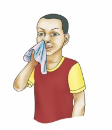

2. Weka alama ya vema (√) kwa picha inayoonesha hatua ya kuoga na alama ya kosa (X) kwa hatua isiyo ya kuoga.
| Na. | Kitendo | Alama |
|---|---|---|
| (a) | ||
| (b) |  | |
| (c) | ||
| (d) | ||
| (e) | ||
| (f) |  |
Na.
Kitendo
(a)
Alama
(b)
Alama
Na.
Kitendo
(c)
Alama
(d)
Alama
(e)
Alama
(f)
Alama
2. Weka alama ya vema (√) kwa picha inayoonesha hatua ya kuoga na alama ya kosa (X) kwa hatua isiyo ya kuoga.
| Na. | Kitendo | Alama |
|---|---|---|
| (a) | ||
| (b) |  | |
| (c) | ||
| (d) | ||
| (e) | ||
| (f) | |